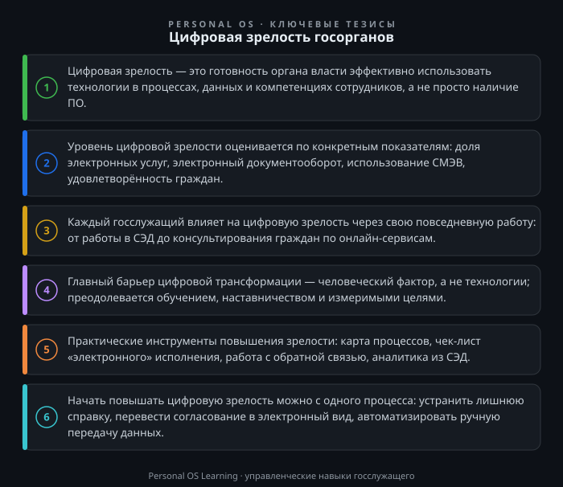

Цифровая трансформация перестала быть абстрактным лозунгом. Для государственного служащего это ежедневная реальность: электронный документооборот, межведомственные запросы, портал госуслуг, аналитические дашборды. Однако наличие техники и программ — ещё не цифровая зрелость. Это комплексный показатель, который отражает, насколько орган власти готов эффективно использовать цифровые технологии для достижения своих целей и удовлетворения потребностей граждан.
В национальных целях развития России до 2030 года цифровая трансформация выделена как отдельное направление Указ Президента РФ от 21.07.2020 № 474 «О национальных целях развития Российской Федерации на период до 2030 года». Для каждого ведомства установлены целевые значения. И именно от действий конкретных служащих зависит, будут ли эти значения достигнуты. Эта статья — о том, что такое цифровая зрелость на практике, как её оценивают и что может сделать каждый госслужащий, чтобы повысить её уровень в своём органе.
Цифровая зрелость — это не просто процент оцифрованных услуг. Это способность органа власти быстро адаптировать свои процессы, культуру и компетенции сотрудников к использованию цифровых инструментов. В методиках оценки обычно выделяют несколько компонентов:
Цифровая зрелость измеряется не по принципу «есть/нет», а по шкале уровней: от начального, когда цифровые инструменты используются фрагментарно, до оптимизированного, когда процессы постоянно улучшаются на основе данных. Для госслужащего важно понимать: даже если в вашем органе установлена современная СЭД, но сотрудники продолжают распечатывать документы и носить их на подпись, уровень зрелости остаётся низким. Технологии — лишь половина уравнения.
В России для оценки цифровой зрелости государственных органов используется система показателей, утверждённая на федеральном уровне. Ключевые из них:
Методики расчёта таких показателей утверждаются на федеральном уровне: методика расчёта показателя «Цифровая зрелость» органов государственной власти субъектов Российской Федерации, органов местного самоуправления и организаций утверждена постановлением Правительства РФ от 03.04.2021 № 542 Постановление Правительства РФ от 03.04.2021 № 542 «Об утверждении методик расчета показателей для оценки эффективности деятельности высших должностных лиц субъектов Российской Федерации и деятельности исполнительных органов субъектов Российской Федерации». На практике это означает, что у каждого органа есть план по достижению целевых значений, и работа каждого отдела влияет на общий результат.
Важно понимать: показатели цифровой зрелости касаются не только ИТ-специалистов. Ответственный за предоставление услуги специалист должен знать, переведена ли услуга в электронный вид, какие сведения запрашиваются в рамках межведомственного взаимодействия по Федеральный закон от 27.07.2010 № 210-ФЗ «Об организации предоставления государственных и муниципальных услуг», и как гражданин может получить результат дистанционно. Это зона ответственности каждого.
Цифровая зрелость органа складывается из цифровой зрелости его сотрудников. Для госслужащего это означает владение набором практических навыков:
Информационно-коммуникативная компетенция здесь проявляется в полной мере: госслужащий должен уметь объяснить гражданину, как получить услугу онлайн, или коллеге — как ускорить процесс с помощью цифрового инструмента. Это не техническая, а коммуникативная задача.
Повышение цифровой зрелости не требует от госслужащего написания кода или внедрения сложных систем. Есть конкретные инструменты, доступные каждому.
1. Карта процесса. Возьмите одну услугу или внутреннюю процедуру, которую вы выполняете регулярно. Опишите все шаги от заявления до результата. Отметьте, где происходит ручная передача данных, дублирование, ожидание. Это позволит увидеть точки для автоматизации. Например, если вы вручную переносите данные из заявления в реестр, возможно, эту операцию можно автоматизировать или хотя бы упростить с помощью шаблонов.
2. Чек-лист «электронного» исполнения. Для каждой задачи задайте себе вопросы:
Если хотя бы на один вопрос вы ответили «да», но этого не делается, — это потенциал для улучшения.
3. Регулярная работа с обратной связью. Смотрите на жалобы и обращения граждан через призму цифровых процессов. Если граждане жалуются на долгое ожидание в очереди — возможно, нужно продвигать электронную запись. Если жалуются на необходимость приносить справки — проверьте, все ли сведения запрашиваются по СМЭВ.
4. Использование аналитики. Даже простые данные из СЭД (средний срок согласования, количество зависших документов) могут стать основой для улучшения работы. Не нужно ждать, пока аналитический отчёт подготовит ИТ-отдел — эти данные часто доступны в самой системе.
Главный барьер — не технологии, а человеческий фактор. Сопротивление изменениям, страх перед новым, привычка работать по-старому. Типичные возражения: «это не работает», «мне так удобнее», «граждане не готовы к онлайн». Часто за этим стоит просто отсутствие навыков или негативный опыт.
Что помогает:
Ещё один барьер — устаревшие нормативные и административные регламенты, которые предписывают бумажный документооборот. Здесь госслужащий может инициировать пересмотр регламентов, подготовив предложения о внесении изменений. Это сложная, но важная работа.
Предлагаю три задания, которые займут не более 15–30 минут, но дадут немедленный результат.
Задание 1. Аудит одного процесса.
Выберите одну услугу или внутреннюю процедуру, за которую вы отвечаете. Составьте её карту: все шаги, участники, документы, сроки. Отметьте все точки, где информация передаётся вручную или на бумаге. Определите, какие из этих точек можно перевести в электронный вид или автоматизировать. Запишите три конкретных предложения.
Задание 2. Проверка на «лишние справки».
Возьмите перечень документов, которые вы запрашиваете у заявителя при предоставлении услуги. Для каждого документа задайте вопрос: может ли этот документ быть получен по каналам межведомственного взаимодействия (СМЭВ) без участия заявителя? Если да — составьте служебную записку о необходимости изменить административный регламент или порядок работы. Это прямое применение требований 210-ФЗ.
Задание 3. Чек-лист вашего рабочего места.
Оцените свой типичный рабочий день по чек-листу:
Поставьте себе цель на следующий месяц по каждому пункту.
Цифровая зрелость госоргана — это не абстрактный показатель, а совокупность конкретных действий каждого сотрудника. Она измеряется не количеством закупленного оборудования, а тем, как технологии меняют процессы и взаимодействие с гражданами. Госслужащий, который осознанно использует цифровые инструменты, предлагает улучшения и помогает коллегам осваивать новое, вносит прямой вклад в достижение национальных целей. Начните с малого: проанализируйте один процесс, устраните одну лишнюю справку, переведите одно согласование в электронный вид. Из таких «одних» и складывается зрелость.

Открыть инфографику в полном размере ↗
Отправить отметку в базу Пройти тест по теме